The idea
Quick commerce changed how people buy groceries, but clothes still mean either a trip to the market or a multi-day wait for an online order. Meanwhile, the boutiques around you, the ones with the best local labels, have almost no online presence.
SHAZX treats your neighbourhood as one closet. It shows real stores near you, what they have in stock, and how long delivery will take, then gets a rider to your door.
Designing around distance
In fashion delivery, distance is the product. So every store and product card carries a live ETA and distance, and the home screen leads with the stores near you rather than an endless catalogue. Shoppers can switch between a list and a map of stores, and onboarding asks for location first, because without it the app has nothing useful to show.
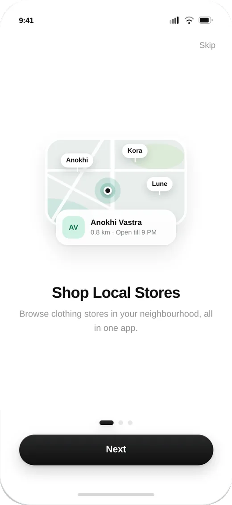
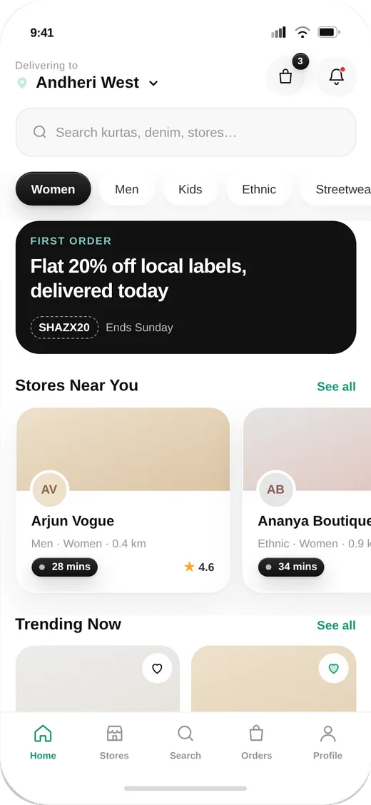
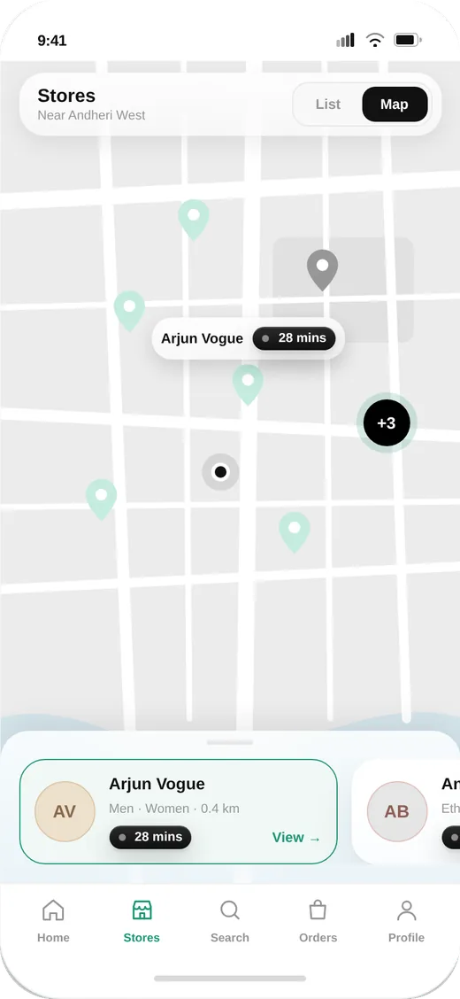
Built for clothes, not groceries
Clothing has problems groceries don’t: sizes run out, one outfit can come from two stores, and fit is personal. Product pages show which sizes are actually available in that store right now, with unavailable sizes struck out rather than hidden. The cart groups items by store, each with its own delivery time, and the app warns you before you mix orders it can’t deliver together.
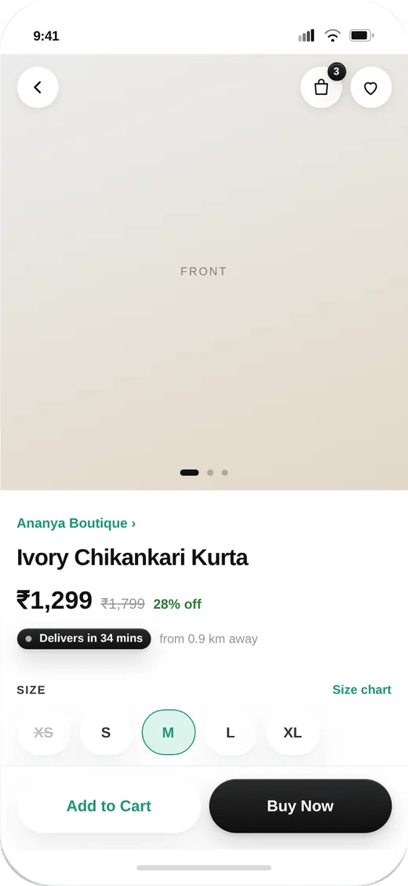
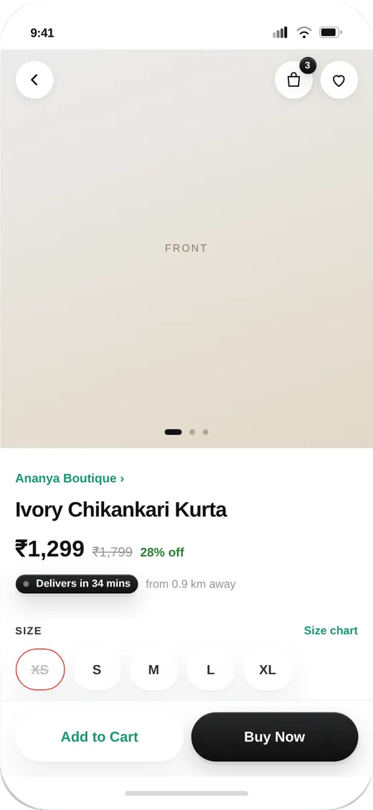
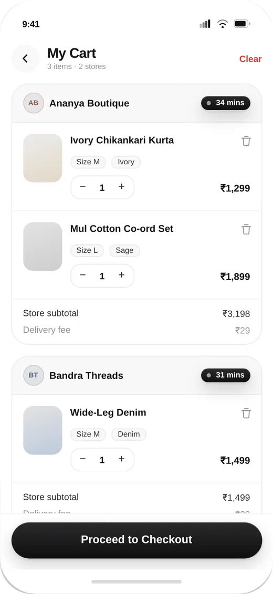
From checkout to the door
Mobile number and OTP sign-in keeps the first purchase quick. Checkout puts UPI first, as most Indian shoppers expect, with cards, net banking and cash on delivery as fallbacks. After payment, live tracking shows the rider on the map, the order’s stage, and a direct line to call or chat with them.
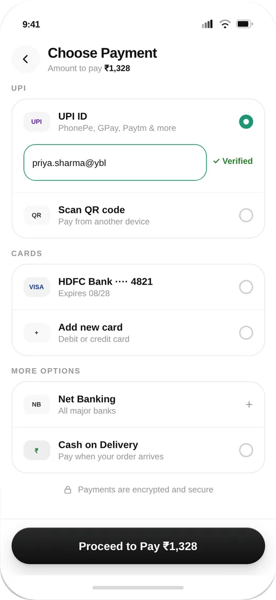
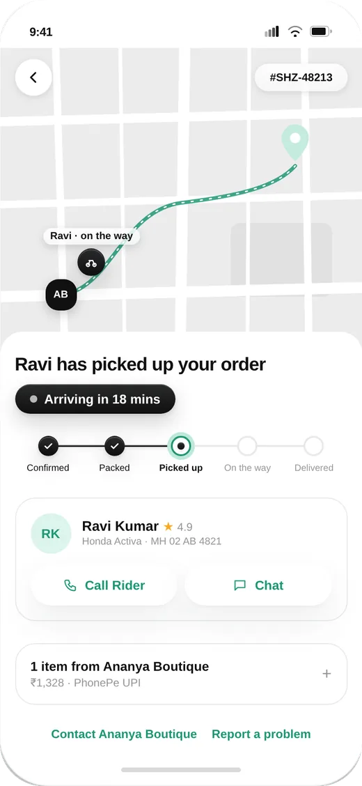
Every state, not just the happy path
A prototype that only shows the ideal flow hides the hardest design decisions. I mapped the full product as 99 screens and states across 11 flows: auth, home, stores, products, search, cart and checkout, tracking, notifications, modals, system screens and account. Each failure gets a clear next step instead of a dead end.
Wrong or expired otp
Inline error with attempts left, a resend timer, and a lockout state after too many tries.
Outside the delivery zone
The address is flagged right in the list, so shoppers fix it before checkout, not after.
Upi timed out
The order is kept, with one tap to retry or switch payment method.
Rider running late
A revised ETA with the reason, shown up front instead of letting the old time silently pass.
Cancel after pickup
Explains why it’s no longer possible and offers support, instead of a disabled button.
No stores nearby yet
A notify-me option and a quick way to change location, so the first visit still ends with an action.
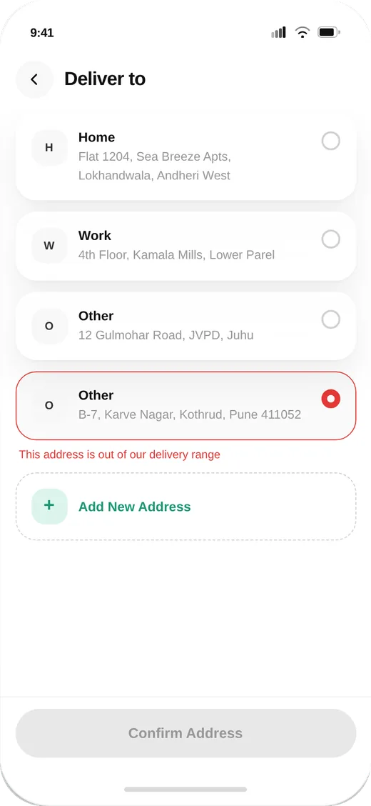
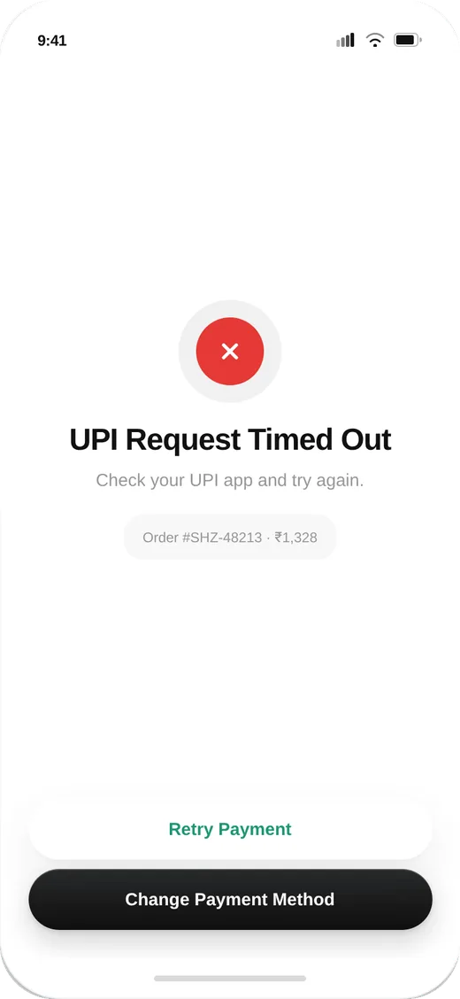
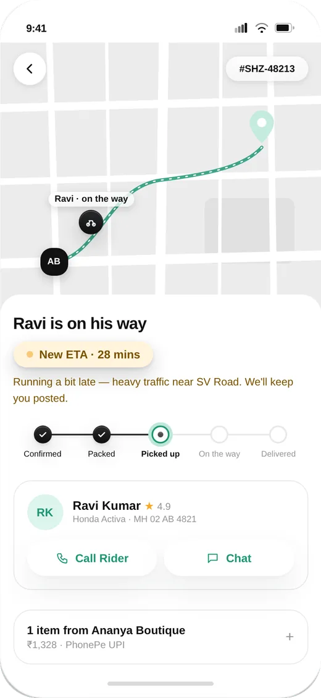
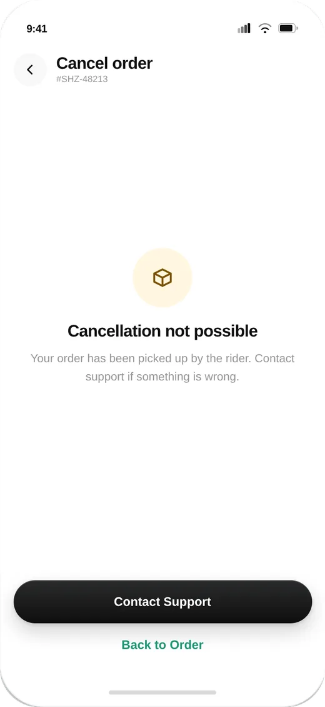
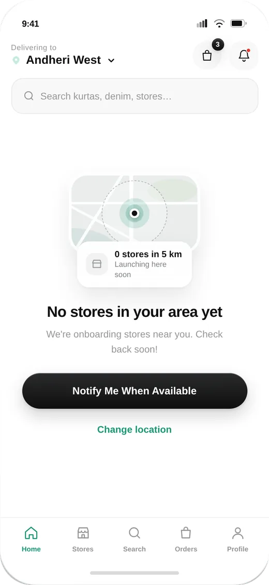
Both sides of the marketplace
A marketplace only works if stores can keep up. Alongside the shopper app, I designed a partner app for store owners to accept orders, keep stock in sync and hand orders over to riders, which is what lets the shopper side promise live availability.
What I’d test next
The open question is how small the delivery radius can be while still showing enough choice. The next step is testing radius and store density against how often shoppers actually find their size, before committing to it in the product.